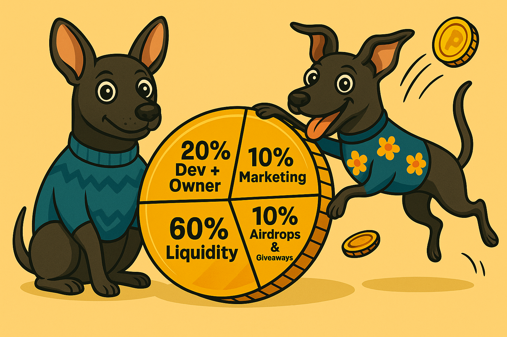

Tokenomics – The Structure behind our coin
The $PEPOL token supply is fixed at 1,000,000,000 (1 billion). Here's how it's split — with every paw accounted for.
- ✅ Ownership renounced at launch
- ✅ Liquidity locked for summer 2025
- ✅ Contract verified on Basescan
- ✅ No taxes
- ✅ No honeypots
- ✅ No hidden functionality
- ✅ Transparent developer ownership
- ✅ Not mintable
- ✅ No hidden fees
- ✅ We aim for no red flags
$PEPOL is a meme coin built specifically for fun, but included within its core is transparency and community. We hope the community encourages this coin to be long-term and success-driven.
Live Chart: You’ll be able to view the $PEPOL chart on Dexscreener here. Note, Dex Screener only logs coins with purchases past 24 hours.